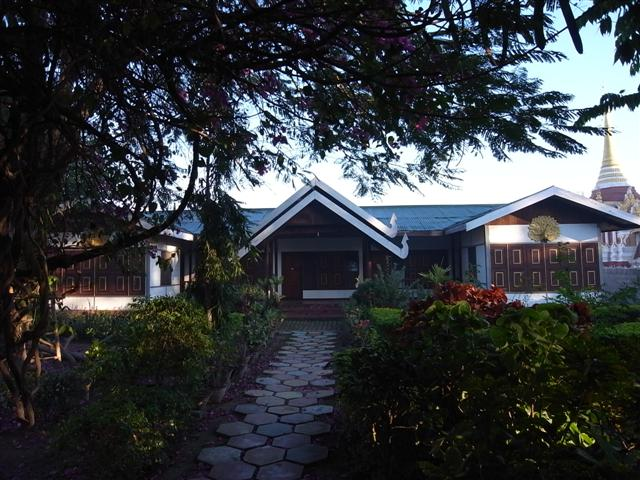

Nyaungshwe 海拔比 Kalaw 低，還以為會暖得多，不料今早是最冷的早上，早餐還要在房外的花園吃，我什麼也穿上身也發抖。見到一些外國人甚至連當地人也穿著厚重的衣服，冷帽頸巾手襪樣樣齊，真不相信身在緬甸。
但早餐卻很豐富，又夠熱，緬甸的茶有很多叫法，其中一種叫 lap pat ye，是茶加練奶，這裏沒有鮮奶或淡奶。
旅館老闆為我買了今晚去 Mandalay 的夜車，忙碌的老闆，好像沒時停，一時和旅客安排各樣東西，一時開電單車走了出去，可能我今天閒得很，早餐也吃了很久，他來來回回多次，有次更問我要不要去遊湖，說剛有一條船欠人，我覺得太趕急拒絕了。
回房執好行李，退房後去找船出湖，沒有什麼主意，見到渡頭沒有遊客，我想我太晚吧，剛巧見到昨天載我來 Nyaungshwe 的船夫，也不想太多，走去租了他的船，雖然我只遊半天，又沒人和我分擔費用，但我也沒怎樣講價，12000 Kyat 包了他的船。
我很享受這樣，看見其他的船滿滿，行程又要就來就去，加上我想早回，這樣子我覺得很好，想何時去什麼地方也行，十分自由，船夫對著我這個沒什麼要求的客人也很開心。
遊 Inle Lake 實質是遊湖邊各小村和佛寺，湖上風光是一隻隻小船的漁夫一邊用腳撐船一邊捕魚。我也不太記得去了什麼地方，第一個去的地方是個很大很大的佛寺，之後去的是一些工場，有一個地方是用 Lotus 來造成線，再編織成各樣織品，原來 Lotus 織的超貴，比起絲綢要貴上數倍。另外又參觀了一間銀飾的工場，在這裏買了一樣東西，信它是人手製造。
船在河上行，不時很多船靠來，賣一些廉價的東西，多數一至兩美元就有交易。
旅遊書曾提到這裏的長頸婦女，因為遊客喜歡而被逼一代一代穿那個金色頸圈，長大後頸骨不能承受頭的重量，這樣一生便要穿那個東西了，更可悲的是有些更會被捉了去泰國，天天像動物般被人「觀賞」。所以當船夫帶了我去看這些婦女，我不願看便離開。或者這樣根本沒有什麼意義，但這是唯一可做，不能放棄的態度。
因為想回去 Nyaungshwe 吃個美味午餐以及逛街，所以很快又回 Nyaungshwe 了，去一間叫 Mr. Cook 的餐店，這裏還有 coconut shake。隔籬檯坐著兩個男子，一聽到他們的聲音，便認出他們，真要命。想不到在這裏再遇上在 Little Inn 隔籬房嘈生晒的二人。他們如常大聲講大聲笑，我可以確定 Little Inn 的牆是薄了一點，但他們真的十級大聲。
巴士票寫著 5:30pm，但回去旅館一問應該何時去巴士站，旅館職員竟說我現在就好開始去，說因為很難乘車，嚇得我即時起行，沒去閒逛。結果是，我 4:30pm 便到巴士站，職員還要說今天的巴士要 6:00pm 才會經過。-_-
巴士站是在 Nyaungshwe 北面的一個 junction，這裏實在是沒有什麼東西看的，百無聊賴，找電話打去 Mandalay 找旅館，打去 Royal Guest House 問，滿了，再打去 ET Hotel，有房。
在巴士站看見唯一一個外國遊客，但是佷 cool 的，反而在這裏和旁邊的當地人語言不通地指手劃腳。在這裏我又遇上兩位後生仔，他們都是等去 Mandalay 的車，不過原來今晚同一間公司開兩輛車，我們坐不同車。他們其中一個到 Mandalay 後又即日轉巴士去 Mu Se，再過境去中國探哥哥。
我們雖然不同車，但兩輛車都是同路，都在同一地方暫停讓我們吃東西和去廁所，所以我們都一起吃飯。巴士中坐我旁邊的尼泊爾人，請我聽他的 SONY 隨身聽，內有多首強勁印度音樂。
今晚的夜車，比上次更辛苦，可能因為由 Nyaungshwe 去 Mandalay 初段是山路，又彎又斜又高又低，巴士不能順暢地行駛，一時停一時開，搖到你暈，chock 到你嘔。

Little Inn
Nyaungshwe
Inlay Lake
junction